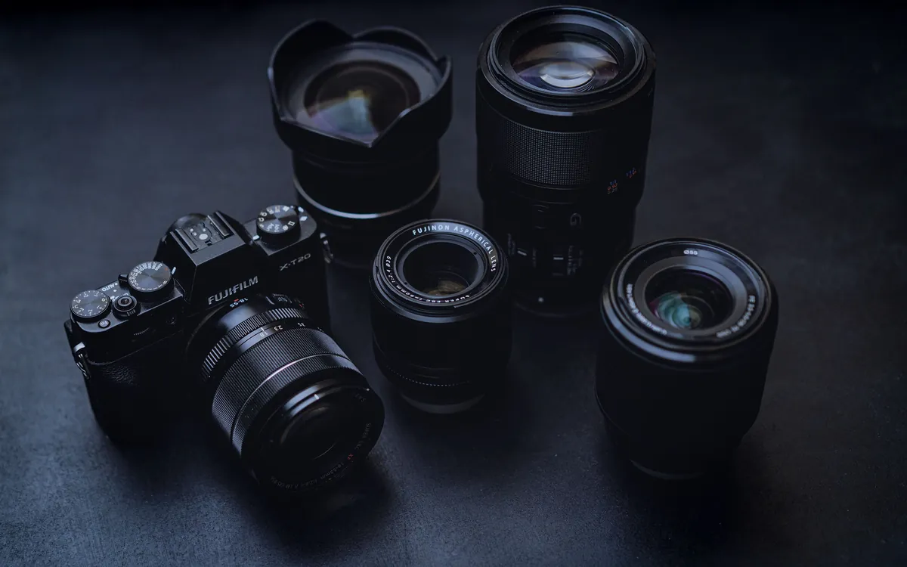
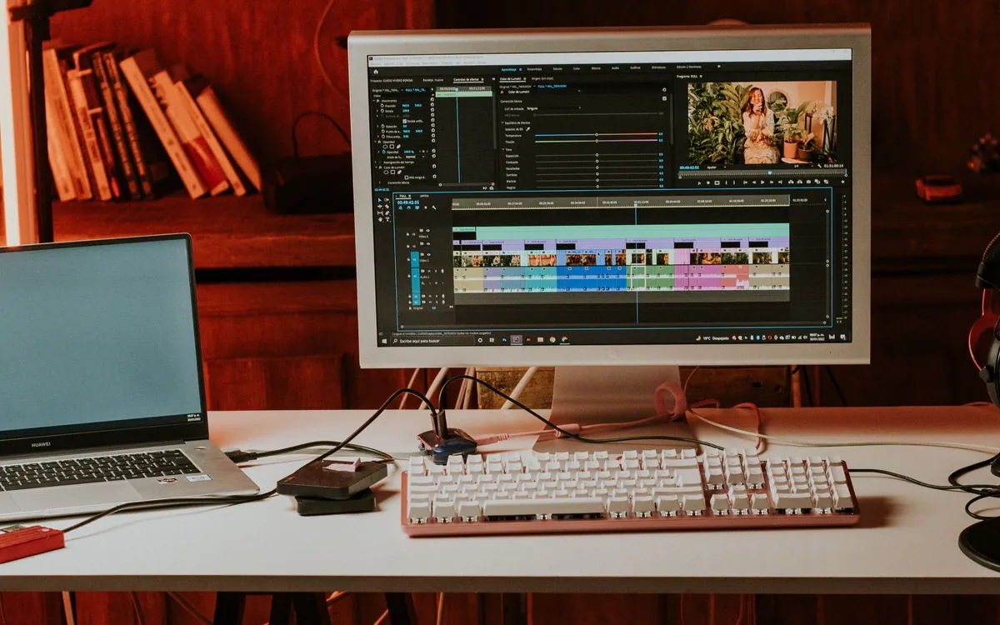

Start
A basic presence on social media.
400 €/ month
- Monthly shoots
- 1 × up to 2 hours
- Videos up to 30 seconds
- 2
- Posts
- 4
- Stories
- 4
CREATIVE STUDIO · LISBON
We film what makes your business special. One session becomes videos, posts and Stories — with publishing taken care of.
I+D / Services
Regular content or a standalone project. Choose what your business needs now.
For business owners who want to post consistently, show their work and stop improvising at the end of the day.
02A good Reel starts with a specific message. We capture useful shots and edit for the phone screen.
03We choose the format around its purpose: website, sales meeting, social media or internal communication.
04From a title sequence to an explainer video. We work on rhythm and visual hierarchy before animating.
INSTAGRAM + FACEBOOK
From a basic social presence to regular shoots. Choose the amount of monthly content your business needs.
A basic presence on social media.
More video and regular publishing.
More shoots and content every month.
Bonus: Facebook ad setup and a test launch for one campaign hypothesis.
Choose packageWe plan the content, film and prepare your materials.
Portuguese copy. Instagram and Facebook.
One revision round and a brief monthly report.
Videos are counted separately from posts. Content is created from the package’s shoots. Publishing the same material on two networks does not double the quantity.
The first month is a paid trial.
Travel, timing, payment and VAT are agreed in writing before starting.
Filming ideas: products, processes, people and atmosphere. We’ll find a story that fits your business.
Preparation, people and atmosphere: a story that starts before the first order.
A clearly explained process helps people get to know your business.
Type, shapes and movement that make an idea easier to understand.
I+D / PROCESS
Goals, audience, scope and dates. Deliverables agreed in writing.
Ideas and a plan first. Then filming at your location.
Editing, sound, copy and revisions within the agreed scope.
Files in the agreed formats. Publishing and a report in the monthly package.
IVAN & DANIIL
We work with businesses across different sectors in Lisbon. Travel is confirmed in the proposal.
Ivan Romanenko has over 20 years of experience in television and video. He handles ideas, filming and post-production.
Daniil handles project communication, agreements and feedback. Communication in Portuguese and English.
Compare the scope before comparing prices. What our €400 package includes and what is quoted separately.
Read article ↗
02A two-hour session goes further when your space, products and people are ready. A practical guide before filming.
Read article ↗
03The right format depends on where the video will appear and what you need to explain. Choose before you film.
Read article ↗FAQ
Premium includes Facebook ad setup and one test launch as a bonus. Ad spend and ongoing campaign management are paid separately.
Direct messages and customer service are outside the production and publishing package.
No. Videos are counted separately from posts. Publishing the same material on Instagram and Facebook does not double its quantity.
We turn your shoot into videos, posts and Stories that show what you offer, how you work and how customers can reach you. That makes it easier for people discovering your business to see if it’s right for them. With a monthly package, we publish the content and summarise its performance in a short report.
I+D / NEXT FRAME